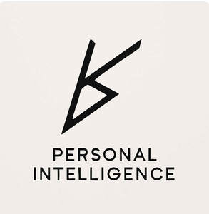

Trade Mark Journal No.2025/019 9 May 2025
UK00004193512 24 April 2025 (9,41,42)

- Class 9
- Downloadable software powered by artificial intelligence, namely, software for simulating and analysing individual cognitive, emotional, and behavioural patterns; downloadable software of real-time self-awareness coaching, introspective guidance, decision-support systems, and personalised cognitive frameworks; downloadable machine learning models tailored to user-specific cognition and decision-making processes; downloadable software applications for smartphones, smartwatches, and wearable devices including smart glasses and bone-conduction auditory systems, providing personalised cognitive feedback and real-time user interaction; software for emotional diagnostics, adaptive communication systems, and multi-modal contextual reasoning; AI-enabled downloadable software facilitating voice-based interaction, visual recognition, and human-AI dialogue through mobile and wearable platforms.
- Class 41
- Educational and training services delivered via non-downloadable, cloud-based artificial intelligence software, namely, platforms for personalised learning, cognitive development, and introspective training; provision of real-time, AI-driven educational guidance for decision-making, emotional regulation and philosophical insight; delivery of individualised developmental programs, interactive simulations, and virtual learning environments structured around user-specific psychological frameworks; educational content tailored to live user interaction, self-reflective input, and adaptive feedback mechanisms; all services designed to promote self-awareness, emotional dexterity, and human ethical reasoning through human-centred artificial intelligence.
- Class 42
- Scientific and technological services, namely, the design, development, and maintenance of artificial intelligence platforms built upon user-specific cognitive and emotional architectures; hosting of AI systems on scalable cloud infrastructure for real-time learning and self-adaptation; development of machine learning models and self-adjusting neural networks that mirror individual cognitive processes; research and engineering in the fields of psychology-informed AI, human-machine interaction, neuro-symbolic reasoning, and ethically aligned AI systems; integration of user-directed feedback loops to refine AI behaviour in accordance with personal values and inclusive design principles; creation of AI systems capable of visual-human interpretation, long-term interaction modelling, and cognitive augmentation. .
Erlandas Barkauskas